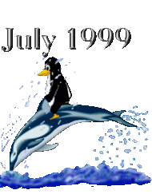

Es verano en el hemisferio norte, y Tux, el ping"uino de Linux, está jugando con nuestro delfín de LinuxFocus.
Mientras escribo este Editorial, hay 30 grados centígrados en mi despacho, y me encantaría unirme a Tux y el delfín.
Este es el primer número de LinuxFocus tras un largo paréntesis. LinuxFocus comenzó como una pequeña iniciativa, con unos pocos artículos escritos más o menos libremente en HTML. Durante los últimos dos años, el número de artículos ha crecido constantemente y cada vez iba siendo necesario dedicar un mayor esfuerzo a la administración del site. Ahora hemos definido un nuevo formato para los artículos (ver la Plantilla para Artículos de LinuxFocus) y esperamos que esto haga más fácil a los autores la escritura de artículos. Para nosotros será mucho más fácil administrar los artículos y el sitio web. También hemos escrito bastante software adicional para generar algunas páginas automáticamente, y buscar los links muertos. Para tí, el lector de la revista, nada ha cambiado mucho, pero esperamos que notes que, a largo plazo, la calidad de la revista mejora gracias a estos cambios.
LinuxFocus ha pasado por buenos y malos tiempos. Mantener una revista multilingue supone un montón de trabajo, y no es el pasatiempo favorito de mucha gente el traducir los artículos, pero resulta esperanzador ver que queda aún un número suficiente de idealistas que creen en la idea del software libre y la documentación libre para una comunidad global de Linux.
Aunque ya estamos en Agosto, el número no está totalmente acabado. Falta algún artículo por traducir, y hay que pulir algún otro. Pero al menos hay artículos nuevos, para leer en verano. Y, si te sobra tiempo, y te apetece traducir algún artículo, no dudes en contactar con los editores.
¡Que os guste este número!
 Cómo borrar Windows, por Olivier Chapuis
Japonés en Linux, Parte I, por Lee Wee Tiong
Renderman III, por Carlos Calzada Grau
Comandos divertidos con csh/sh, enviado por Philipp Gühring
Entrevista con Dennis Ritchie, por Manuel Benet
El proyecto F-CPU: Intentando el más difícil
todavía, por Manuel Benet Navarro
PostScript II: La pila de operandos, manipulaciones y
operadores matemáticos, by Emre Demiralp
Postscript III:Manejo de datos en PostScript: Arrays, Variables,
Bucles y definiciones de Macros, por Emre Demiralp
Cómo borrar Windows, por Olivier Chapuis
Japonés en Linux, Parte I, por Lee Wee Tiong
Renderman III, por Carlos Calzada Grau
Comandos divertidos con csh/sh, enviado por Philipp Gühring
Entrevista con Dennis Ritchie, por Manuel Benet
El proyecto F-CPU: Intentando el más difícil
todavía, por Manuel Benet Navarro
PostScript II: La pila de operandos, manipulaciones y
operadores matemáticos, by Emre Demiralp
Postscript III:Manejo de datos en PostScript: Arrays, Variables,
Bucles y definiciones de Macros, por Emre Demiralp|
© 1999 LinuxFocus Página de contacto con LinuxFocus |